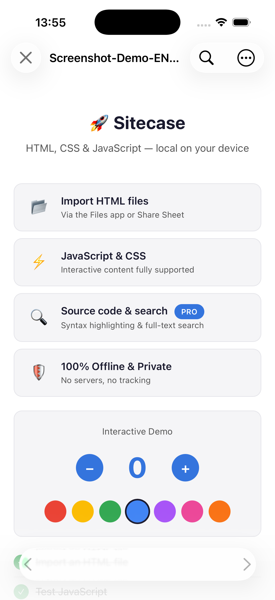
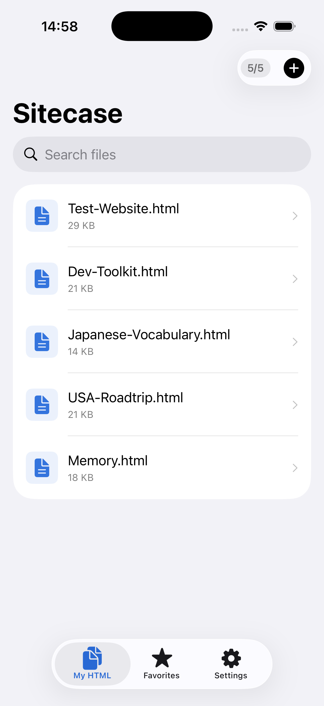
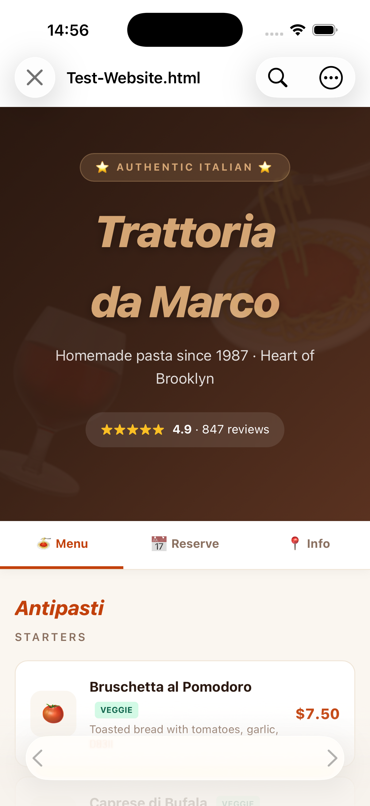
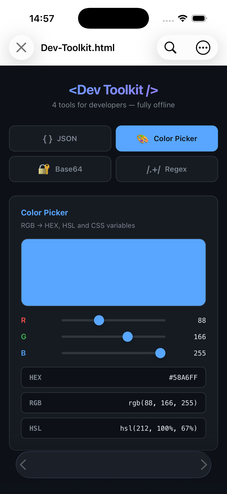
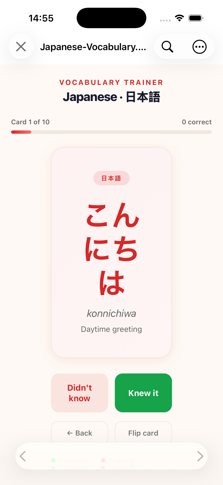
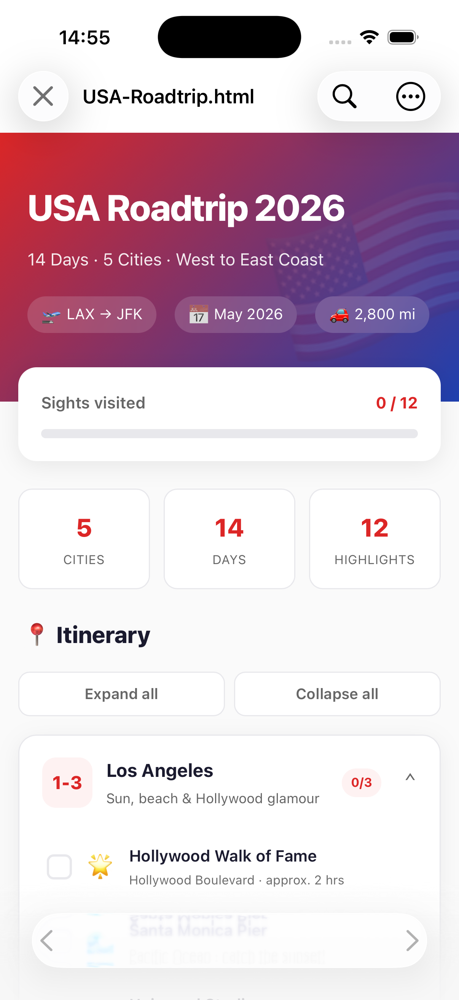
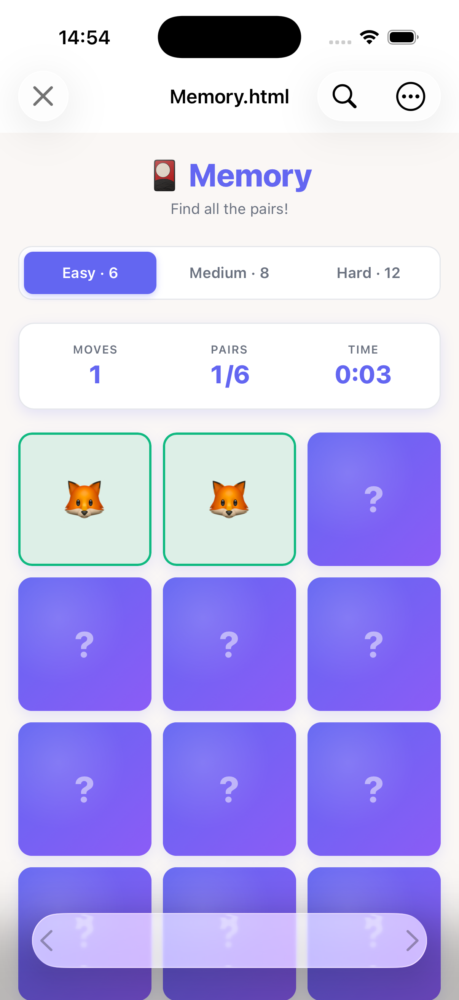

iPhone & iPad
Sitecase는 기기에서 바로 HTML 파일을 열고, 렌더링하고, 검색합니다. JavaScript, CSS, 소스 보기를 지원합니다. 서버 없음, 계정 없음, 추적 없음.

기능
웹 개발자, 학생, 교사, 그리고 이동 중에 HTML을 보고 싶은 모든 분을 위해. 단일 파일부터 여러 페이지로 된 사이트까지.
HTML, CSS, JavaScript를 완전하게 렌더링합니다. 계산기, 게임, 프로토타입이 네이티브로 실행됩니다.
이미지, CSS, JavaScript가 포함된 여러 페이지 사이트를 엽니다. 단일 파일만이 아닙니다.
Grid, Flexbox, 애니메이션, 웹 폰트를 픽셀 단위로 정확하게 표시합니다.
뷰어를 벗어나지 않고 구문 강조와 함께 모든 파일을 읽을 수 있습니다.
열린 파일 안에서 전체 텍스트를 검색하고 결과를 강조 표시합니다.
시스템 설정을 따르거나 고정할 수 있어 어떤 환경에도 어울립니다.
모든 페이지에서 핀치 확대, 그리고 고정 기본 확대 비율 Pro
자주 쓰는 파일과 폴더를 고정하고 한 번의 탭으로 다시 엽니다.
파일 앱, AirDrop, iCloud Drive 또는 다른 앱의 공유 메뉴로.
페이지별로 JavaScript와 네트워크 접근을 허용하거나 차단합니다.
업로드 없음, 계정 없음, 분석 없음. 파일은 당신 곁에 남습니다.
연결 없이 사용 가능. 비행기에서도, 기차에서도, 신호가 없어도.
스크린샷
문서, 단어 카드, 여행 계획, 프로토타입, 작은 게임. 모두 간단한 HTML 파일로.






개인정보 보호
HTML을 보여주는 데 클라우드는 필요 없습니다. 그래서 두지 않았습니다.
모든 파일은 로컬에서 열리고 렌더링됩니다. 무언가를 보낼 백엔드가 존재하지 않습니다.
분석 도구, 광고 ID, 자체 쿠키가 없습니다. 어떤 파일을 여는지 우리는 알지 못합니다.
파일은 당신이 둔 곳에 그대로 있으며 iOS 샌드박스와 암호화로 보호됩니다.
FAQ
HTML 파일과 관련 CSS, JavaScript, 이미지, 폰트입니다. 여러 페이지가 있는 폴더 전체도 열고 서로 연결할 수 있습니다.
아니요. Sitecase는 완전히 오프라인으로 렌더링합니다. 페이지 자체가 외부 콘텐츠를 불러올 때만 연결이 필요합니다.
파일 앱, AirDrop, iCloud Drive 또는 다른 앱의 공유 메뉴를 이용합니다.
네. 간단한 카운터부터 완전한 게임과 프로토타입까지 스크립트가 뷰어에서 실행됩니다.
Sitecase는 무료로 사용할 수 있습니다. 선택형 앱 내 구입으로 웹사이트 폴더 전체 열기, 구문 강조 소스 보기, 텍스트 검색, 즐겨찾기, 고정 확대 비율, JavaScript 및 네트워크 접근 제어가 추가됩니다.
아니요. 서버도, 계정도, 분석도 없습니다. 모든 것이 기기에 남습니다.